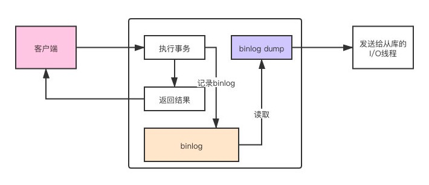
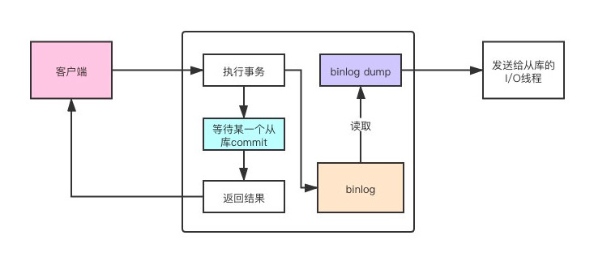

数据库模式定义语言DDL(Data Definition Language)并非程序设计语言，DDL是结构化查询语言SQL(Structured Query Language)的组成部分。SQL语言包括四种主要程序设计语言类别的语句：数据定义语言(DDL)、数据操作语言(DML)、数据控制语言(DCL)、事务控制语言(TCL)。
一、概念
主从复制一般是为了实现数据的容灾备份或读写分离，一般会有N(N>=1)台主DB和M(M>=1)台从DB，其大致过程将主DB的数据复制到从DB，不同的DB实现原理不同。以博主的工作经历来说，目前只用过MySQL、Redis、MongoDB这三种比较典型的DB，其他如基于列式存储的Hbase和基于倒排索引的全文搜索引擎Elasticsearch只是简单的使用过，此处不再深入。
二、分类
- MySQL
- 实现原理，可通过执行
SHOW PROCESSLIST;查看主从库上的线程信息- 主服务器上的任何修改都会通过自己的
I/O tread(可以并发执行)保存在二进制日志binlog里; - 主服务器的
log dump线程专门来给从库I/O线程传binlog数据;- 主服务器有多少从服务器就会有多少
log dump线程
- 主服务器有多少从服务器就会有多少
- 从服务器上会启动两个线程(<5.6)：
I/O thread和SQL thread:IO thread主要用于拉取/接收(半同步/异步)主服务器传递过来的binlog，并将其写入到中继日志relay log;SQL thread主要负责解析relay log并应用到从服务器中。
- 主服务器上的任何修改都会通过自己的
- 实现原理，可通过执行
由于主服务器
IO thread是多线程的，5.6版本以前从服务器的IO thread和SQL thread是单线程的，在并发量大的情况下肯定会出现复制延迟情况。为了解决此情况，5.7+版本后基于组提交在从服务器上实现了SQL thread多线程回放。
5.7并行复制的基本思想：一个组提交(group commit)的事务都是可以并行回放，因为这些事务都已进入到事务的prepare阶段，则说明事务之间没有任何冲突，否则就不可能提交。如何判断事务是否在同一个组中，后续我们再深入讨论，主要是基于GTID(Global Transaction Identifier，即全局事务ID，是一个事务在提交的时候生成的，是这个事务的唯一标识)。
5.6版本其实也实现了SQL thread多线程，只不过是基于schema级别，即基于库的，如果主服务器有多个库则此方式可以加快复制速度，一库多表则不行，故其应用范围有限。
如果在
5.6版本开启并行复制功能set global slave_parallel_workers=10，即开启10个SQL thread，那么SQL线程就变为了协调者线程coordinator thread，coordinator thread主要负责以下两部分内容：
若判断可以并行执行，那么选择worker线程执行事务的二进制日志;
若判断不可以并行执行，如DDL、跨schema事务操作，则等待所有的worker线程执行完成之后再执行当前的日志。
这就意味着coordinator线程并不是仅将日志发送给worker线程，自己也可以回放日志，但是所有可以并行的操作须交付给其他worker线程完成(coordinator线程与worker是典型的生产者与消费者模型)。
所谓
schema，从逻辑层面讲，它就是MySQL数据库的组织和结构，是数据库对象的集合(包括表、视图、储存过程、索引等)；从物理层面讲，schema就是数据库的代名词，其含义和database等价。
- 常见形式
- 一主一从
- 一主多从
- 多主一从(5.7开始支持)
- 主主复制
- 联级复制(M->S1->S2)

复制方式
异步复制：默认，主库在执行完客户端提交的事务后会立即将结果返给给客户端，并不关心从库是否已经接收并处理。
- 主库不会主动的向从库发送消息，而是等待从库的I/O线程建立连接，然后主库创建
log dump线程，把binlog event发送给从库I/O线程。

- 主库不会主动的向从库发送消息，而是等待从库的I/O线程建立连接，然后主库创建
同步复制：主库执行完一个事务，等所有的从库都复制了该事务并成功执行后才返回成功信息给客户端。
半同步复制(5.5开始支持，以插件的形式存在，需要单独安装)：主库在执行完客户端提交的事务后不是立刻返回给客户端，而是等待至少一个从库接收到并写到
relay log中才返回成功信息给客户端- after_commit模式，5.6默认，主库先提交事务，等待从库返回结果再通知客户端，只是延迟了对客户端的返回，并没有延后事务的提交。
- after_sync模式，5.7默认，主库先不提交事务，等待某一个从库返回了结果之后，再提交事务。如果从库在没有任何返回的情况下宕机了，master这边也无法提交事务，主从仍然是一致的。

查看从库复制信息
show slave satus;1
2
3
4
5
6
7
8Master_Log_File：SLAVE中的I/O线程当前正在读取的主服务器二进制日志文件的名称
Read_Master_Log_Pos：在当前的主服务器二进制日志中，SLAVE中的I/O线程已经读取的位置
Relay_Log_File：SQL线程当前正在读取和执行的中继日志文件的名称
Relay_Log_Pos：在当前的中继日志中，SQL线程已读取和执行的位置
Relay_Master_Log_File：由SQL线程执行的包含多数近期事件的主服务器二进制日志文件的名称
Slave_IO_Running：I/O线程是否被启动并成功地连接到主服务器上
Slave_SQL_Running：SQL线程是否被启动
Seconds_Behind_Master：从服务器SQL线程和I/O线程之间的时间差距，单位以秒计。-
- 基于库(5.6)
- 基于组提交(5.7)
- 5.7引入了变量
slave_parallel_type，可选值DATABASE、LOGICAL_CLOCK，DATABASE和5.6中相同，Schema级别的并行复制，而LOGICAL_CLOCK是基于Group Commit的并行复制。
- 5.7引入了变量
- 基于WriteSet(8.0)
8.0引入了参数binlog_transaction_dependency_tracking来控制事务依赖模式
问题排查
- 1062：主键冲突
- 1032：记录不存在
- 手动处理：跳过复制错误：
set global sql_slave_skip_counter=1
- 手动处理：跳过复制错误：
- 1032：记录不存在
- 1062：主键冲突
Redis
- 启动方式：3种，配置文件(推荐)、redis-server启动指定(会暴露主节点密码)、redis-cli建立连接后指定(主节点设置密码则无法通过此方式启动)
- 作用
- 数据冗余
- 故障恢复
- 负载均衡
- 高可用基石(哨兵、集群)
- 实现原理：master节点的写操作会产生快照rdb文件(对比MySQL的binlog文件)，通过主从节点建立的连接进行传输，传输期间主节点产生的写命令会写入缓冲区，rdb传输完成后会将缓冲区的命令传递给从节点，从而实现主从复制。此过程会经历以下3个阶段：
- 复制过程
- 连接建立阶段
- 数据同步阶段
- 2.8版本以前(sync)
- 2.8版本以后(psync)
- 命令传播阶段
MongoDB(从4.0版本后已不支持主从复制，此处只做实验用)
主从复制
Master/slave replication is no longer supported，4.0版本后不再支持主从复制1
2
3
4
5
6
7
8
9
10
11
12
13
14
15
16
17
18
19
20
21
22
23
24
25
26
27
28
29
30
31
32
33
34
35
36
37
38
39
40
41#master节点
dbpath = /usr/local/mongodb-3.6.23/data/27017
logpath = /usr/local/mongodb-3.6.23/data/27017/mongo-27017.log
port = 27017 ## 指定端口
#fork = true ## 一后台进程方式启动
logappend=true ## 以追加方式记录日志
storageEngine=wiredTiger
#security:
# authorization: enabled
#auth = true
bind_ip=127.0.0.1
master=true
#slave节点
dbpath = /usr/local/mongodb-3.6.23/data/27018
logpath = /usr/local/mongodb-3.6.23/data/27018/mongo-27018.log
port = 27018 ## 指定端口
#fork = true ## 一后台进程方式启动
logappend=true ## 以追加方式记录日志
storageEngine=wiredTiger
#security:
# authorization: enabled
#auth = true
bind_id=127.0.0.1
source=127.0.0.1
slave=true
>cd /usr/local/mongodb-3.6.23 && ./bin/mongo --port 27017/27018
>db.isMaster()
{
"ismaster" : true,
"maxBsonObjectSize" : 16777216,
"maxMessageSizeBytes" : 48000000,
"maxWriteBatchSize" : 100000,
"localTime" : ISODate("2021-04-08T12:25:49.534Z"),
"logicalSessionTimeoutMinutes" : 30,
"minWireVersion" : 0,
"maxWireVersion" : 6,
"readOnly" : false,
"ok" : 1
}
副本集模式
- 节点角色
- Primary节点，即主节点
- Secondary节点，即从节点，根据属性不同又可具体细分如下：
- Arbiter节点，只参与投票，不能被选为Primary，并且不会复制Primary节点数据。
- Vote0节点，从3.0版本开始，复制集成员最多50个，参与Primary选举投票的成员最多7个，其他成员即Vote0的vote属性必须设置为0，即不参与投票。
- Priority0节点，可参与投票，但不会被选为Primary节点，会正常复制Primary节点数据，对客户端可见(可用来读取数据)
- Hidden节点，和Priority0一样，唯一区别就是对客户端不可见
- Delayed节点，和Hidden一样，唯一区别就是复制时间有延迟
- 实现原理：Primary节点写入数据，Secondary通过读取Primary的oplog得到复制信息，开始复制数据并且将复制信息写入到自己的oplog。其中，oplog是local库下的一个固定集合。
- 复制过程
- 连接建立阶段
- 数据同步阶段
- 全量同步
- 增量同步
- 节点角色